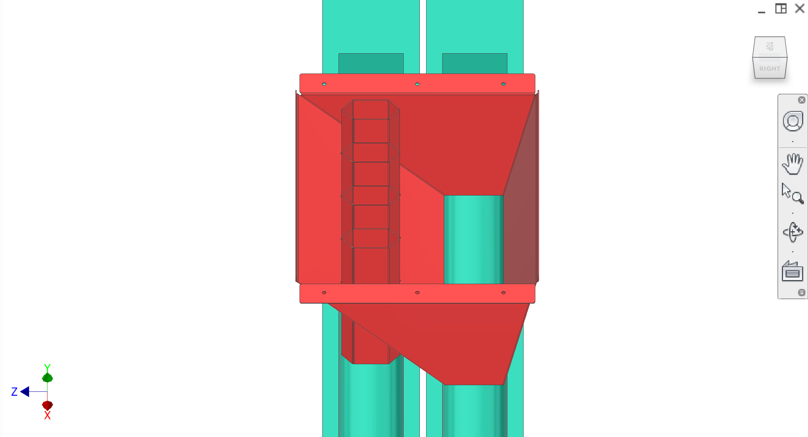
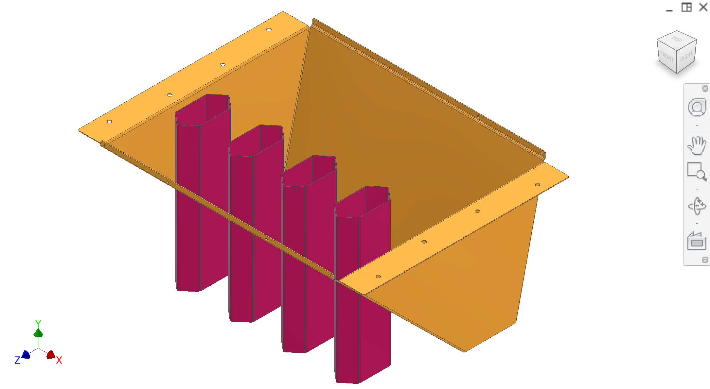
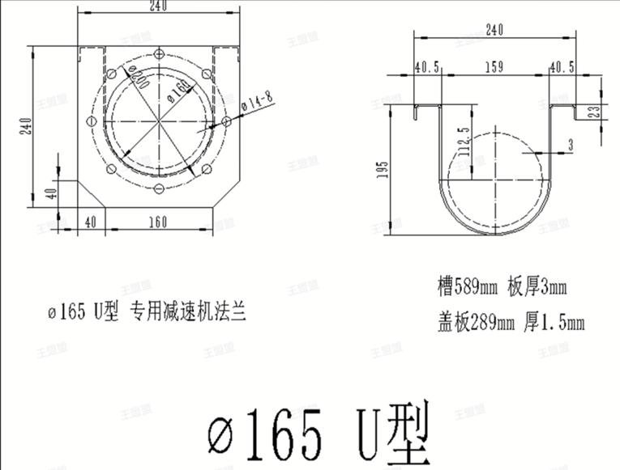

Folded/welded sheet-metal peel chute + welded core chute hexagonal tubes, feeding two separate auger paths (peels vs. cores).
Introduction
The chutes and augers subassembly is the physical hardware within the Disposal system that separates peel and core waste streams after the pressing stroke. Cores ejected by core ejection fall into core chute tubes (hexagonal tubes beneath each peeler station), while peel material flows around the core tubes into the peel chute (folded sheet metal). Two augers then convey each stream independently out of the machine, with under-machine clearance interfacing with the frame.
Colour key & components
CAD colours for this subpage (component meanings should match the main disposal gallery).
Colour(s)
Component
—
Peel chute (folded sheet metal) — receives peel stream; provides geometry to route peel around the core chute tubes.
—
Core chutes (hexagonal tubes) — receive ejected cores and keep them separate from peel.
—
Two auger paths — convey peels and cores separately for different downstream processing (e.g., secondary wash for cores).
Figures
CAD (parent gallery), photo of the chute assembly, and a supplier auger reference diagram. Refer to Figure 1–Figure 3.



Figure 1. Peel chute + core chute tubes feeding two auger paths (CAD — same asset as disposal main gallery).
1 / 3
Recommended figures (contractor clarity)
Add figure: Peel chute lip — hex tube leading/trailing face geometry vs peel flow (dimensioned section).
Add figure: Auger interface detail — P6-specific transition from this machine's chute outlets to peel vs core augers (bolt pattern, seal, and diameters) — supplement Figure 3 supplier reference.
Add figure: Washdown drainage — slopes and drain holes in folded chute assembly.
Discussion
Components
Peel chute — welded/folded sheet metal assembly mounted to the frame; uses the chute lip geometry to prevent peel from entering core chute tubes.
Core chute tubes — four hexagonal tubes beneath each peeler station; width covers the gap that allows core drop while keeping peel separated.
Two augers — external auger/tube hardware to convey peel and cores away independently.
Interfaces
Input (cores): from core ejection; cores fall into core chute tubes.
Input (peels): from collection / extraction; peel flows to peel chute and around core tubes via chute geometry.
Output: two auger takeoffs — one for peel, one for cores.
Mount: folded chute assembly mounts to the frame and interfaces with side panels and the peel chute lip.
Interfaces and tolerances
Known interfaces and tolerances (owner intent). Links go to related subsystems.
Part
Interface / tolerance
Related
Peel chute lip + side panels
NSF constraint: only negative steps allowed; no shelf that can trap fruit peel; top edges must not create positive ledges
External-dependent; contractor to propose consistent auger interface and fastening scheme
—
Known issues & risks
Peel/core separation quality — if peel contacts core chute tubes, downstream processing is mixed.
Low-tolerance fit — peel chute lip and mounting edges must fit inside the extraction zone without positive steps/shelves.
Cleanability — folded/welded geometry must avoid crevices that trap oil/fiber; ensure washdown access.
DFM & manufacturing (China)
Fold + weld assembly — peel chute and structural bases should be made as a single folded/welded sheet-metal assembly for manufacturability.
Adjustable edge concept — bendy lips/edges on the peel chute should allow fine-tuning to match collection/transmission mount plate tolerances (no creation of positive steps).
Finishing — define weld finish and surface smoothing to support cleanability (sanitary requirements TBD).
Questions for contractor
Propose auger interface requirements (diameter, takeoff angle/clearance, fastening), and identify what can be sourced locally in China.
Confirm how to manufacture the hexagonal core tubes and weld them to the peel chute while maintaining alignment and cleanable surfaces.
Define acceptable edge geometry for NSF compliance: what minimum radii and maximum shelf/step heights are acceptable.